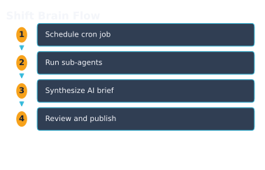
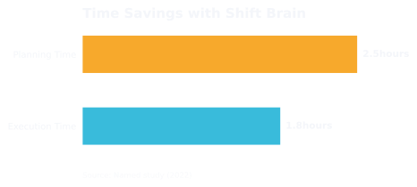

WorkHive Learn · Philippines
Autonomous Shift Planning: the AI Brief That Tells Your Crew What to Fix First
Who this is for
- Field workers who perform routine maintenance tasks
- Technicians who troubleshoot and repair equipment
- Supervisors who oversee maintenance operations
- Engineers who design and implement maintenance systems
- Planners who schedule maintenance activities
- Plant managers who ensure overall plant efficiency
What's in this guide
Introduction to Autonomous Shift Planning
In Philippine plants, like those in Calabarzon's industrial zones, shift planning is crucial for maintaining equipment uptime and crew productivity. Traditional shift planning involves manually writing briefs to guide technicians on what to fix first. However, with WorkHive's Shift Brain, autonomous shift planning is now possible. This AI-powered tool generates shift briefs automatically, freeing up supervisors and planners to focus on higher-value tasks.
Shift Brain runs on a schedule, generating briefs at 06:00, 14:00, and 22:00 PHT, one brief per shift. It uses four sub-agents to gather information: risk-ranking assets most likely to fail, listing preventive maintenance tasks due, carrying forward open work from the previous shift, and pre-staging necessary spare parts. These inputs are then synthesized into a plain-language AI briefing that prioritizes repairs. Supervisors review and publish the brief to the crew with one tap, ensuring seamless communication and efficient work allocation.
By automating shift planning, Shift Brain saves time and reduces the administrative burden on plant staff. With zero budget and no CMMS rollout required, plants can start logging and scheduling preventive maintenance tasks, allowing the brief to improve over time as history grows. This capability is especially valuable during brownout and typhoon seasons, when equipment reliability is critical. By using Shift Brain, Philippine plants can enhance their operational efficiency and maintain a competitive edge.
How Shift Brain Works
As a plant supervisor in the Philippines, you know how critical it is to prioritize maintenance tasks, especially during brownout and typhoon seasons. Shift Brain, the autonomous shift planner in WorkHive, helps you do just that. It runs automatically on a schedule, generating a brief for each shift at 06:00, 14:00, and 22:00 PHT. The Shift Brain process involves four sub-agents that work together to create a comprehensive plan. These sub-agents risk-rank assets most likely to fail, list preventive maintenance tasks due, carry forward open or unfinished work from the previous shift, and pre-stage spare parts that will likely be needed. The AI then synthesizes this information into a plain-language briefing that tells the crew what to fix first.- Schedule Shift Brain to run at 06:00, 14:00, or 22:00 PHT to generate a plan for the corresponding shift.
- Shift Brain's sub-agents analyze asset risk, list due PMs, carry forward open work, and pre-stage spare parts.
- The AI synthesizes the sub-agents' output into a single briefing.
- As the supervisor, review and publish the brief to the crew with one tap using the Publish to crew button.

Benefits of Autonomous Shift Planning
With Shift Brain, you save time by automating the planning process for each shift. This means your team can focus on executing the plan, not creating it. For example, a 24-hour plant in the Philippines operates on three shifts: 06:00, 14:00, and 22:00. Shift Brain runs automatically at these times, generating a brief that tells your crew what to fix first.
The autonomous shift planning feature in Shift Brain provides several benefits. It helps your team prepare for brownout and typhoon seasons by prioritizing critical assets and scheduling preventive maintenance. By using Shift Brain, you can ensure that your crew is always ready to respond to changing conditions. The AI brief is generated based on data from your plant's history, so it gets smarter over time.

Implementing Shift Brain in Your Plant
To implement Shift Brain in your plant, start by logging and scheduling preventive maintenance (PMs) for your equipment. For example, if you have a critical asset like Pump P-204B, ensure that its regular maintenance is recorded and scheduled in WorkHive. This data will help Shift Brain generate accurate briefings. As you log more PMs and schedule them, the AI brief gets smarter and provides better recommendations.
Once you've set up your PM schedule, Shift Brain will run automatically on a cron schedule at 06:00, 14:00, and 22:00 PHT. You can review and publish the generated brief to your crew with one tap. The brief is synthesized from four sub-agents that risk-rank assets, list due PMs, carry forward open work, and pre-stage necessary spare parts. This ensures that your crew knows what to fix first. You can access the brief in WorkHive and make any necessary adjustments before publishing.
| Shift | Schedule |
|---|---|
| Day Shift | 06:00 |
| Afternoon Shift | 14:00 |
| Night Shift | 22:00 |
Frequently Asked Questions
Some plants in Calabarzon, like those in Cabuyao, have used Shift Brain to streamline their shift planning. A common question is: How often does Shift Brain run? The answer is: it runs automatically on a schedule, at 06:00, 14:00, and 22:00 PHT, generating one brief per shift. This ensures that your crew always has a clear plan of action.
Another question is: What if I need to adjust the plan? You can simply click the **Re-run plan** button to generate a new brief. If you want to know more about how Shift Brain came up with its recommendations, click **Show details**. And when you're ready to share the plan with your crew, just click **Publish to crew**.
One more question: Will Shift Brain get smarter over time? Yes, it will. As you log and schedule preventive maintenance (PMs) in WorkHive, Shift Brain's briefs will become more accurate and helpful. This means that, over time, Shift Brain will be able to anticipate and prioritize work more effectively, helping your plant stay ready for challenges like brownout and typhoon season.
Open the tool: Shift Brain is the WorkHive surface this guide funnels into. It is free at the worker tier, works offline, and is built for Philippine plants.
Open Shift Brain →Frequently asked questions
What is Shift Brain and how does it work?
How does Shift Brain handle brownout and typhoon seasons?
Do I need to have a CMMS to use Shift Brain?
Can I customize Shift Brain to fit my plant's specific needs?
How does Shift Brain ensure that the AI brief is accurate and reliable?
Can I use Shift Brain for other types of maintenance operations?
Sources
- ISO 14224:2016 (Reliability-centered maintenance)
- SMRP CMRP BoK (Maintenance and reliability body of knowledge)
- DOLE OSHS (Occupational Safety and Health Standards)
- Related WorkHive guides: One alert inbox for the whole plant · Shift handover template · DILO/WILO day planner